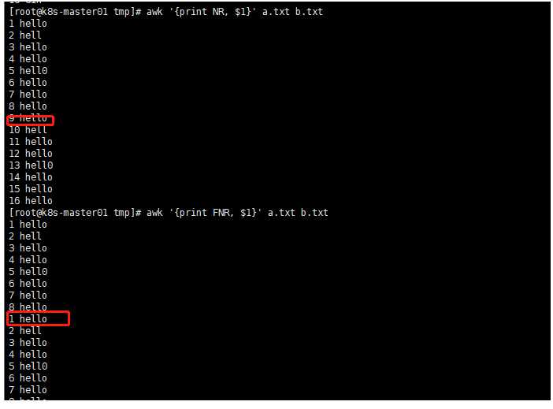

[ToC]
目的
在实际的生产中能够熟练的使用awk ，sed ，grep等文本操作工具，对故障的快速定位，日志分析等有很大帮助，于是根据自己的实际的生产经验，总结一下awk的用法。
awk 基本结构
awk 'BEGIN{ print "start" } pattern{ commands } END{ print "end" }' file
一个awk脚本通常由：BEGIN语句块、能够使用模式匹配的通用语句块、END语句块3部分组成，这三个部分是可选的。任意一个部分都可以不出现在脚本中，脚本通常是被单引号或双引号中，例如：
awk 'BEGIN{ i=0 } { i++ } END{ print i }' filename
##上面的方法跟cat filename|wc -l 的效果一样
awk 常见内置变量
$n 当前记录的第n个字段，比如n为1表示第一个字段，n为2表示第二个字段。
$0 这个变量包含执行过程中当前行的文本内容。
[A] FILENAME 当前输入文件的名。
[A] FS 字段分隔符（默认是任何空格）。
[A] NF 表示字段数，在执行过程中对应于当前的字段数。
[A] NR 表示记录数，在执行过程中对应于当前的行号。
[A] OFMT 数字的输出格式（默认值是%.6g）。
[A] OFS 输出字段分隔符（默认值是一个空格）。
[A] ORS 输出记录分隔符（默认值是一个换行符）。
[A] RS 记录分隔符（默认是一个换行符）。
NR和FNR
-
NR：表示awk开始执行程序后所读取的数据行数。
FNR：awk当前读取的记录数，其变量值小于等于NR（比如当读取第二个文件时，FNR是从0开始重新计数，而NR不会）。

-
NR==FNR：用于在读取两个或两个以上的文件时，判断是不是在读取第一个文件
[root@k8s-master01 tmp]# cat a 张三|000001 李四|000002 [root@k8s-master01 tmp]# cat b 000001|10 000001|20 000002|30 000002|15 [root@k8s-master01 tmp]# awk -F '|' 'NR==FNR{a[$2]=$0;next}{print a[$1]"|"$2,$0}' a b 张三|000001|10 000001|10 张三|000001|20 000001|20 李四|000002|30 000002|30 李四|000002|15 000002|15 -
打印指定行数
[root@k8s-master01 tmp]# awk '{if(NR==3)print NR":"$0}' a.txt 3:hello mysql redis ceph [root@k8s-master01 tmp]# awk 'NR==3 {print NR":"$0}' a.txt 3:hello mysql redis ceph
NF
-
NF和$NF
NF表示字段数，在执行过程中对应于当前的字段数。$NF表示最后一列，$(NF_1)表示倒数第二列
[root@k8s-master01 tmp]# cat a|awk -F \| '{print $0}' 张三|000001 李四|000002 [root@k8s-master01 tmp]# cat a|awk -F \| '{print $NF}' 000001 000002 [root@k8s-master01 tmp]# cat a|awk -F \| '{print $(NF-1)}' 张三 李四 [root@k8s-master01 tmp]# cat a 张三|000001 李四|000002 李四|000002|000004 [root@k8s-master01 tmp]# awk -F \| '{printf "文件夹%s,第%s行的列个数是%s \n", FILENAME,NR,NF}' a 文件夹a,第1行的列个数是2 文件夹a,第2行的列个数是2 文件夹a,第3行的列个数是3
-v 传递外部变量
[root@k8s-master01 tmp]# awk -v asd="asdasd" -F \| '{printf "文件夹%s,第%s行的列个数是%s, %s\n", FILENAME,NR,NF,asd }' a
文件夹a,第1行的列个数是2, asdasd
文件夹a,第2行的列个数是2, asdasd
文件夹a,第3行的列个数是3, asdasd
awk运算与判断
算术运算符
| 运算符 | 描述 |
|---|---|
| + - | 加，减 |
| * / & | 乘，除与求余 |
| + - ! | 一元加，减和逻辑非 |
| ^ *** | 求幂 |
| ++ – | 增加或减少，作为前缀或后缀 |
[root@k8s-master01 tmp]# awk 'BEGIN{a=0}{print a++,++a}'
0 2
2 4
4 6
逻辑运算符
| 运算符 | 描述 |
|---|---|
| || | 逻辑或 |
| && | 逻辑与 |
[root@k8s-master01 tmp]# awk 'BEGIN{a=10;b=1;if (a>5 && a<10) ;print a}'
10
[root@k8s-master01 tmp]# awk 'BEGIN{a=10;b=1;(a>5 && a<10) ;print a}'
10
正则运算符
| 运算符 | 描述 |
|---|---|
| ~ ~! | 匹配正则表达式和不匹配正则表达式 |
[root@k8s-master01 tmp]# awk 'BEGIN{a="abferbsdasd" ; if (a ~ /^ab/){print a}}'
abferbsdasd
[root@k8s-master01 tmp]# awk 'BEGIN{a="sdferbsdasd" ; if (a ~ /^ab/){print a}}'
其它运算符
| 运算符 | 描述 |
|---|---|
| $ | 字段引用 |
| 空格 | 字符串连接符 |
| ?: | C条件表达式 |
| in | 数组中是否存在某键值 |
awk高级输入输出
next 用法
awk中next语句使用：在循环逐行匹配，如果遇到next，就会跳过当前行，直接忽略下面语句。而进行下一行匹配。next语句一般用于多行合并,next是跳出，类似于continue，不执行后面表达式。
-
打印偶数行
## 第一种方法 [root@k8s-master01 tmp]# awk '{if (NR%2==0){printf "这是第%s行，打印最后一列是%s \n", NR,$NF}}'\n a.txt 这是第2行，打印最后一列是cloudNative 这是第4行，打印最后一列是kafak 这是第6行，打印最后一列是c 这是第8行，打印最后一列是Django ## 第二种方法用next [root@k8s-master01 tmp]# awk '{if (NR%2==1){next}else{printf "这是第%s行，打印最后一列是%s \n", NR,$NF}}'\n a.txt 这是第2行，打印最后一列是cloudNative 这是第4行，打印最后一列是kafak 这是第6行，打印最后一列是c 这是第8行，打印最后一列是Django
数组应用
数组是awk的灵魂，处理文本中最不能少的就是它的数组处理。因为数组索引（下标）可以是数字和字符串在awk中数组叫做关联数组(associative arrays)。awk 中的数组不必提前声明，也不必声明大小。数组元素用0或空字符串来初始化，这根据上下文而定。
## 统计netstat 状态链接数
[root@k8s-master01 tmp]# netstat -n|awk '/^tcp/ {++S[$NF]} END{for( a in S) print a , S[a]}'
ESTABLISHED 250
TIME_WAIT 896
### /^tcp/ 匹配TCp开头的
## ++S[$NF] 相当于 s[$NF]=S[$NF]+1 及 0+1，计数tcp状态
## END 最后输出
时间函数
| 格式 | 描述 |
|---|---|
| 函数名 | 说明 |
| mktime( YYYY MM dd HH MM ss[ DST]) | 生成时间格式 |
| strftime([format [, timestamp]]) | 格式化时间输出，将时间戳转为时间字符串 具体格式，见下表. |
| systime() | 得到时间戳,返回从1970年1月1日开始到当前时间(不计闰年)的整秒数 |
建指定时间(mktime使用）
awk 'BEGIN{tstamp=mktime("2001 01 01 12 12 12");print strftime("%c",tstamp);}'
2001年01月01日 星期一 12时12分12秒
awk 'BEGIN{tstamp1=mktime("2001 01 01 12 12 12");tstamp2=mktime("2001 02 01 0 0 0");print tstamp2-tstamp1;}'
2634468
求2个时间段中间时间差，介绍了strftime使用方法
awk 'BEGIN{tstamp1=mktime("2001 01 01 12 12 12");tstamp2=systime();print tstamp2-tstamp1;}'
308201392
常见实列
查看tcp链接状况统计
netstat -n|awk '/^tcp/ {++S[$NF]} END{for (i in S) print i,S[i]}'
日志分析(nginx)
Nginx内容如下：
172.16.95.6 - - [27/Jul/2020:00:00:02 +0800] "GET /api/users/system_update.json HTTP/1.0" 200 23 "https://www.educoder.net/classrooms" "Mozilla/5.0 (Linux; U; Android 8.0.0; zh-cn; CMR-W09 Build/HUAWEICMR-W09) AppleWebKit/537.36 (KHTML, like Gecko) Version/4.0 Chrome/66.0.3359.126 MQQBrowser/10.4 Mobile Safari/537.36"
-
统计日志中访问最多的10个IP
[root@k8s-master01 ~]# awk '{++S[$1]} END{for (i in S) print i,S[i]}' access.log |sort -k 2 -nr|head -10 94.102.50.96 14 172.16.95.6 7 100.122.65.87 6 100.122.64.243 6 100.122.63.246 6 71.6.167.142 5 100.122.64.206 5 -
统计日志中访问大于4次的IP
[root@k8s-master01 ~]# awk '{++S[$1]} END{for (i in S) print i,S[i]}' access.log |sort -k 2 -nr|head -10 94.102.50.96 14 172.16.95.6 7 100.122.65.87 6 100.122.64.243 6 100.122.63.246 6 71.6.167.142 5 100.122.64.206 5 100.122.64.156 5 100.122.63.233 5 222.240.101.70 4 -
统计某个时间区间内访问最多的10个IP
[root@k8s-master01 ~]# awk '$4 >"[27/Jul/2020:00:00:00" && $4 <"[27/Jul/2020:00:00:03" {++S[$1]} END{for (i in S) print i, S[i]} ' access.log |sort -k 2 -rn|head -10 172.16.95.6 6 172.16.95.29 2 -
统计访问的uri 个数排名
[root@k8s-master01 ~]# awk '{a[$7]++} END{for (i in a) print a[i],i}' access.log |sort -k 1 -nr |head -10 447 / 5 /forums/categories/5 4 /scripts/setup.php 4 /MyAdmin/scripts/setup.php 4 400 3 /robots.txt 3 /pma/scripts/setup.php 2 /phpMyAdmin/scripts/setup.php 2 http://www.baidu.com/cache/global/img/gs.gif 2 http://clientapi.ipip.net/echo.php?info=1234567890 -
统计每个URL访问内容的总大小（$body_bytes_sent）
[root@k8s-master01 ~]# awk '{++S[$7];size[$7]+=$10}END{for(i in S) print size[i],i}' access.log |sort -k 1 -nr|head -10 67646 /images/avatars/LaboratorySetting/1tab?t=1581490135 37406 / 2855 /forums/categories/5 2201 /api/attachments/920111 740 /favicon.ico 676 /scripts/setup.php 676 /MyAdmin/scripts/setup.php 612 http://www.baidu.com/ 571 http://www.qq.com/404/search_children.js 507 /pma/scripts/setup.php -
统计访问状态码为404的IP及出现次数
[root@k8s-master01 ~]# grep 400 access.log |awk '{++S[$1]} END{for (i in S) print S[i],i,"Status:400"}' |sort -k 1 -nr 2 120.132.3.65 Status:400 1 59.36.132.222 Status:400 1 213.227.141.152 Status:400 1 185.53.88.54 Status:400 1 110.249.212.46 Status:400
文件内容对比差异处理
-
对比文件内容，对比文件差异
## 方法一 awk 'FNR==NR{a[$0];next} !($0 in a)' a b ##方法二 grep -vf a b